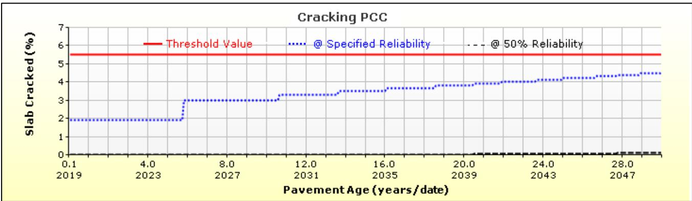

Pavement Structural Design
Selection of slab thickness, joint layout, reinforcement and other structural details so that a concrete pavement carries the anticipated traffic and environmental loading for its design life; includes the traffic characterisation and jointing strategy that feed the design. Pavement Structural Design incorporates inputs from Concrete Pavement Design and Construction, which defines the structural section dimensions, materials, and jointing strategies for road surfaces, alongside Trail Surface Design and Maintenance, which addresses subgrade preparation and drainage for accessible trails. [1][2][6]
CP Tech Center Guides reports covering “Pavement Structural Design” also include the following subtopics: Concrete Pavement Design and Construction and Trail Surface Design and Maintenance.
Sources (19)
Design inputs and requirements
Design inputs and requirements are synthesized from the specific structural mandates of concrete pavement families—Jointed Plain (JPCP), Jointed Reinforced (JRCP), and Continuously Reinforced Concrete Pavement (CRCP)—which dictate slab thickness, joint spacing, reinforcement ratios, and support conditions to ensure long-term durability. [1][3] Structural parameters must be integrated with functional performance criteria, such as load transfer capacity, surface smoothness, and texture retention, while adhering to accessibility standards for cross-slopes and detectable warnings in trail applications. [1][2][4] Ultimately, the design framework requires that material properties, subgrade preparation, and construction practices satisfy reliability targets for anticipated traffic loads and environmental stresses over a 30- to 40-year service life. [1][3]
The following figure illustrates a typical application of these design principles in a Jointed Plain Concrete Pavement installation.
 Jointed Plain Concrete Pavement Before Paving [4]
Jointed Plain Concrete Pavement Before Paving [4]
The image displays a prepared subgrade surface where rows of metal dowel baskets have been installed in a grid pattern to facilitate load transfer across future transverse joints. This visual evidence illustrates the preparation phase for Jointed Plain Concrete Pavement (JPCP), which is described as the most common concrete pavement design due to its cost-effectiveness and reliability. The installation of these dowel bars is a critical structural detail that allows traffic loads to be transferred across slabs while maintaining the plain concrete design.
Materials and mixture design
Pavement structural design relies on a hierarchical material selection process that prioritizes uniform subgrade and base support to ensure consistent load distribution for both highway concrete pavements and trail surfaces. [2][3][5] The specific mixture properties, including flexural strength and elastic modulus, are tailored to the anticipated traffic loads and environmental conditions, with reinforcement strategies varying from unreinforced jointed plain systems to heavily reinforced continuously reinforced configurations or thickened sections over shallow structures. [1][2][3] Ultimately, these material choices and geometric specifications are integrated to control cracking, maintain surface texture, and provide long-term durability against harsh climate extremes. [1][6]
The following figure illustrates typical slab cracking patterns generated by the AASHTOWare Pavement ME Design software.

Example slab cracking output from AASHTOWare Pavement ME Design software [3]It compares two reliability-based prediction models against a user-defined threshold value, demonstrating how environmental impacts and traffic loading influence the development of fatigue cracking in pavement structural design.
Structural section and dimensions
The structural section and dimensions are defined by the interplay of slab thickness, joint spacing, reinforcement, concrete strength, and support conditions to ensure long-term durability under anticipated traffic loads. [1][6] Pavement families such as Jointed Plain Concrete Pavement (JPCP), Jointed Reinforced Concrete Pavement (JRCP), and Continuously Reinforced Concrete Pavement (CRCP) utilize specific combinations of these variables, ranging from unreinforced slabs with short joint spacing to heavily reinforced sections that eliminate regular transverse joints. [3][5] Additionally, specialized applications like trail crossings may require thickened concrete sections with reinforcement to resist flexural cracking over shallow structures or accommodate heavy loads. [2]
The following figure illustrates the consequences of improper joint spacing, specifically showing transverse cracking in a 20-foot concrete slab.
 Transverse cracking caused by excessive slab lengths (20-foot panel) [3]
Transverse cracking caused by excessive slab lengths (20-foot panel) [3]
The image displays a concrete pavement surface featuring a prominent transverse crack that extends across the width of the lane. This visual evidence illustrates how improper joint spacing, specifically excessive slab lengths, leads to structural failure in the form of cracking.
Drainage and environmental controls
Drainage and environmental controls are managed by ensuring uniform subgrade support through proper preparation and the use of stabilized or unstabilized bases that act as barriers to surface water intrusion [1]. [3][6] To mitigate moisture-induced distress and freeze-thaw damage, designs incorporate adequate cross-slopes for drainage and employ timely curing practices tailored to ambient conditions such as temperature and humidity [2]. [2]
The figure below illustrates how water can accumulate in the bottom of a drainable subbase when adequate drainage is not provided.
 Cross-section of a PCC trail showing water trapped in the drainable subbase due to lack of drainage. [2]
Cross-section of a PCC trail showing water trapped in the drainable subbase due to lack of drainage. [2]
The figure displays a cross-section of a concrete pavement structure consisting of a PCC trail, a drainable subbase layer containing trapped water, and an underlying clayey soil subgrade. Poor subgrade can also be improved by treating it with cement, fly ash, or lime. The following cross sections are shown to illustrate what can occur with the presence of a drainable subbase under a trail pavement that does not have a drainage outlet.
Quality control and acceptance
Quality control and acceptance in pavement structural design mandate that subgrade preparation achieves target density and uniform support to ensure consistent load transfer and prevent premature distress. [1][3] Construction practices must strictly adhere to specified tolerances for reinforcement placement, joint spacing, and concrete curing to maintain structural integrity and functional performance over the design life. [1][3]
Related Concepts
References
- P. Taylor, T. Van Dam, L. Sutter, and G. Fick, "Integrated Materials and Construction Practices for Concrete Pavement: A State-of-the-Practice Manual," National Concrete Pavement Technology Center, Rep. Part of InTrans Project 13-482; TPF-5(286), 2019. [Online]. Available: https://www.cptechcenter.org/wp-content/uploads/2019/12/IMCP_manual.pdf
- J. Gross, R. Voelker, G. Smith, and J. Hansen, "Guide to Concrete Trails," National Concrete Pavement Technology Center, 2019. [Online]. Available: https://www.cptechcenter.org/wp-content/uploads/2019/08/concrete_trails_guide.pdf
- D. Harrington, M. Ayers, T. Cackler, G. Fick, D. Schwartz, K. Smith, M. B. Snyder, and T. Van Dam, "Guide for Concrete Pavement Distress Assessments and Solutions: Identification, Causes, Prevention, and Repair," National Concrete Pavement Technology Center, 2018. [Online]. Available: https://www.cptechcenter.org/wp-content/uploads/2019/01/concrete_pvmt_distress_assessments_and_solutions_guide_w_cvr.pdf
- G. Fick, P. Taylor, R. Christman, and J. M. Ruiz, "Field Reference Manual for Quality Concrete Pavements," The Transtec Group, Rep. FHWA-HIF-13-059; DTFH61-08-D-00019-T-10002, 2012. [Online]. Available: https://www.cptechcenter.org/wp-content/uploads/2018/08/hif13059.pdf
- K. Smith, M. Grogg, P. Ram, K. Smith, and D. Harrington, "Concrete Pavement Preservation Guide (Third Edition)," National Concrete Pavement Technology Center, 2022. [Online]. Available: https://www.cptechcenter.org/wp-content/uploads/2022/08/concrete_pvmt_preservation_guide_3rd_edition_web.pdf
- S. Garber, R. O. Rasmussen, and D. Harrington, "Guide to Cement-Based Integrated Pavement Solutions," Institute for Transportation, Iowa State University, 2011. [Online]. Available: https://www.cptechcenter.org/wp-content/uploads/2018/08/IPS.pdf
- J. Gross, D. Harrington, P. Wiegand, and T. Cackler, "Guidance for Improving Foundation Layers to Increase Pavement Performance on Local Roads," National Concrete Pavement Technology Center, Rep. IHRB Project TR-640; InTrans Project 11-422, 2014. [Online]. Available: https://www.cptechcenter.org/wp-content/uploads/2018/03/IHRB_TR-640_foundation_layers_guide.pdf
- H. N. Torres, J. Roesler, R. O. Rasmussen, and D. Harrington, "Guide to the Design of Concrete Overlays Using Existing Methodologies," National Concrete Pavement Technology Center, Rep. DTFH61-06-H-00011; Work Plan 13, 2012. [Online]. Available: https://www.cptechcenter.org/wp-content/uploads/2018/08/Overlays_Design_Guide_508.pdf
- G. D. Reeder, D. S. Harrington, M. E. Ayers, and W. Adaska, "Guide to Full-Depth Reclamation (FDR) with Cement," National Concrete Pavement Technology Center, Rep. SR1006P, 2017. [Online]. Available: https://www.cptechcenter.org/wp-content/uploads/2019/01/Guide_to_FDR_with_Cement_Jan_2019_reprint.pdf
- T. Cackler, T. Burnham, and D. Harrington, "Performance Assessment of Nonwoven Geotextile Materials Used as the Separation Layer for Unbonded Concrete Overlays of Existing Concrete Pavements in the US," National Concrete Pavement Technology Center, 2018. [Online]. Available: https://www.cptechcenter.org/wp-content/uploads/2018/10/US_geotextile_performance_w_cvr.pdf
- J. Weiss, M. T. Ley, L. Sutter, D. Harrington, J. Gross, and S. L. Tritsch, "Guide to the Prevention and Restoration of Early Joint Deterioration in Concrete Pavements," National Concrete Pavement Technology Center Iowa State University, Rep. InTrans Project 15-555; TR-697, 2016. [Online]. Available: https://www.cptechcenter.org/wp-content/uploads/2018/03/2016_joint_deterioration_in_pvmts_guide.pdf
- G. Smith and J. Gross, "Guide to Concrete Overlays of Asphalt Parking Lots (Second Edition)," National Concrete Pavement Technology Center, 2022. [Online]. Available: https://www.cptechcenter.org/wp-content/uploads/2022/06/overlays_parking_lots_guide_2nd_ed_web.pdf
- D. Harrington, G. Fick, and P. Taylor, "Preservation and Rehabilitation of Urban Concrete Pavements Using Thin Concrete Overlays: Solutions for Joint Deterioration in Cold Weather States," National Concrete Pavement Technology Center, Rep. InTrans Project 09-361, 2014. [Online]. Available: https://www.cptechcenter.org/wp-content/uploads/2018/03/thin_concrete_508_compliant_final.pdf
- T. L. Cavalline, G. Voigt, J. Stempihar, J. Lafrenz, T. Van Dam, M. Boyle, D. Johnson, and Rohan Reddy Jonna, "Best Practices Manual: Quality Control and Quality Acceptance of Concrete Airport Pavement," University of North Carolina at Charlotte, Rep. ACPTP-2022-4, 2025. [Online]. Available: https://www.cptechcenter.org/wp-content/uploads/2026/03/ACPTP-2022-4_QC_QA_of_concrete_airfield_pvmt_manual_w_cvr_508.pdf
- D. P. Frentress and D. S. Harrington, "Guide for Partial-Depth Repair of Concrete Pavements," Institute for Transportation, Iowa State University, 2012. [Online]. Available: https://www.cptechcenter.org/wp-content/uploads/2018/08/PDR_guide_Apr2012.pdf
- M. B. Snyder, T. L. Cavalline, G. Fick, P. Taylor, and J. Gross, "Recycling Concrete Pavement Materials: A Practitioner’s Reference Guide," National Concrete Pavement Technology Center, 2018. [Online]. Available: https://www.cptechcenter.org/wp-content/uploads/2018/09/RCA_practioner_guide_w_cvr.pdf
- T. Van Dam, P. Taylor, G. Fick, D. Gress, M. Van Geem, and E. Lorenz, "Sustainable Concrete Pavements: A Manual of Practice," National Concrete Pavement Technology Center, 2011. [Online]. Available: https://www.cptechcenter.org/wp-content/uploads/2018/03/Sustainable_Concrete_Pavement_508.pdf
- G. Fick, J. Gross, M. B. Snyder, D. Harrington, J. Roesler, and T. Cackler, "Guide to Concrete Overlays (Fourth Edition)," National Concrete Pavement Technology Center, 2021. [Online]. Available: https://www.cptechcenter.org/wp-content/uploads/2021/11/guide_to_concrete_overlays_4th_Ed_web.pdf
- K. D. Smith, T. E. Hoerner, and D. G. Peshkin, "Concrete Pavement Preservation Workshop," National Concrete Pavement Technology Center, 2008. [Online]. Available: https://www.cptechcenter.org/wp-content/uploads/2018/08/preservation_reference_manual.pdf